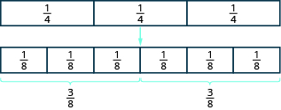
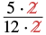
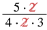
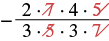
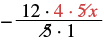

ভগ্নাংশের গুণ
উৎস-অনুগত উপবিভাগ · m81286-fs-id2081411। সম্পূর্ণ বইয়ের অনুবাদ এখনও চলছে। গাণিতিক চিহ্ন, সংখ্যা ও মূল কাঠামো অক্ষুণ্ণ; প্রযোজ্য ক্ষেত্রে সূত্রের শব্দলেবেল বাংলায় অনূদিত। মূল ছবির ভিতরের ইংরেজি লেবেলের অর্থ বাংলা বিবরণে আছে। স্বাধীন শিক্ষক ও ভাষা-পর্যালোচনা বাকি। অন্য উপবিভাগের উৎস-লিঙ্কে ইন্টারনেট প্রয়োজন।
ভগ্নাংশের গুণ
একটি মডেল ভগ্নাংশের গুণ বুঝতে সাহায্য করতে পারে। ভগ্নাংশের পাত দিয়ে আমরা দেখাব এখানে এবং এই দুটি ভগ্নাংশ গুণ করতে হবে। প্রথমটির মান ; তাই অর্ধেক নিতে হবে এই পরিমাণের:
প্রথমে তিন-চতুর্থাংশ বোঝায় এমন ভগ্নাংশের পাত নাও। তিন-চতুর্থাংশের অর্ধেক পেতে পাতগুলি সমান দুটি দলে ভাগ করতে হবে। কিন্তু মাপের তিনটি পাতকে সমান দুটি দলে সাজানো যায় না। তাই সেগুলির বদলে আরও ছোট পাত নিই।

একই সমগ্রের মাপে উপরের সারিতে তিনটি পাত; প্রতিটির মান এক-চতুর্থাংশ। তিরচিহ্নের পরে নীচের সারিতে একই মোট দৈর্ঘ্যের ছয়টি ছোট পাত; প্রতিটির মান এক-অষ্টমাংশ। ছয়টি ছোট পাতকে তিনটি করে দুটি সমান দলে ভাগ করা হয়েছে। প্রতিটি দলের মান তিন-অষ্টমাংশ।
দেখা যাচ্ছে, সমতুল এই ভগ্নাংশটির: এবার মাপের ছয়টি পাতের অর্ধেক নিলে পাই মাপের তিনটি পাত। তাদের মোট পরিমাণ
সুতরাং,
অনুশীলন · এই প্রশ্নের লিঙ্ক
চিত্রের সাহায্যে এই গুণটি দেখাও:
সমাধান
প্রথমে আয়তক্ষেত্রটির অংশ রঙ করো।
একটি আয়তক্ষেত্রকে চারটি সমান উল্লম্ব ভাগে ভাগ করা হয়েছে। বাঁ দিকের তিনটি ভাগ রঙ করা।
আমরা নেব অংশ, অর্থাৎ অর্ধেক। যে পরিমাণের অর্ধেক নেব, তা হল তাই রঙ করা অঞ্চলটির অংশে আরও গাঢ় রঙ করি।
আয়তক্ষেত্রটি চারটি সমান স্তম্ভ ও দুটি সমান সারিতে আটটি সমান ঘরে বিভক্ত। বাঁ দিকের তিনটি স্তম্ভে রঙ আছে; নীচের সারির বাঁ দিকের তিনটি ঘরে আরও গাঢ় রঙ। গোটা আয়তক্ষেত্রের তিন-অষ্টমাংশ গাঢ় রঙ করা।
লক্ষ করো, টি ঘরে গাঢ় রঙ আছে; মোট সমান ঘরের সংখ্যা । অর্থাৎ, আয়তক্ষেত্রটির অংশ গাঢ় রঙ করা।
সুতরাং, অংশ নেওয়া হয়েছে এই পরিমাণের: । তার মান অর্থাৎ,
উদাহরণ [fs-id1534696]-এর মডেল থেকে পাওয়া ফলটি দেখো। আমরা পেয়েছি লক্ষ করেছ কি, লবগুলিকে গুণ করে এবং হরগুলিকে গুণ করেও একই উত্তর পাওয়া যেত?
| লবগুলিকে গুণ করো এবং হরগুলিকে গুণ করো। | |
| সরল করো। |
এখান থেকেই ভগ্নাংশের গুণের সংজ্ঞা পাই। ভগ্নাংশ গুণ করতে লবগুলিকে গুণ করি এবং হরগুলিকে গুণ করি। তার পরে পাওয়া ভগ্নাংশটিকে লঘিষ্ঠ আকারে লিখি।
অনুশীলন · এই প্রশ্নের লিঙ্ক
গুণ করো এবং উত্তরটি লঘিষ্ঠ আকারে লেখো:
সমাধান
| লবগুলিকে গুণ করো; হরগুলিকে গুণ করো। | |
| সরল করো। |
লব ও হরের মধ্যে 1 ছাড়া আর কোনও সাধারণ গুণনীয়ক নেই। তাই ভগ্নাংশটি লঘিষ্ঠ আকারে আছে।
ভগ্নাংশের গুণেও ধনাত্মক ও ঋণাত্মক সংখ্যার নিয়মগুলি প্রযোজ্য। প্রথম ধাপেই গুণফলের চিহ্ন নির্ণয় করে নেওয়া ভাল। উদাহরণ 4.26-এ আমরা দুটি ঋণাত্মক সংখ্যা গুণ করব; তাই গুণফল ধনাত্মক হবে।
অনুশীলন · এই প্রশ্নের লিঙ্ক
গুণ করো এবং উত্তরটি লঘিষ্ঠ আকারে লেখো:
সমাধান
| দুটি সংখ্যার চিহ্ন একই, তাই গুণফল ধনাত্মক। লবগুলিকে গুণ করো, হরগুলিকে গুণ করো। | |
| সরল করো। | |
| লব ও হরের সাধারণ গুণনীয়ক খোঁজো। সাধারণ গুণনীয়কটি দেখিয়ে আবার লেখো। |  লব: 5 গুণ 2। হর: 12 গুণ 2। লব ও হরের সাধারণ গুণনীয়ক 2 দুটি কাটা হয়েছে। বাকি থাকে লব 5 ও হর 12। |
| সাধারণ গুণনীয়ক দিয়ে লব ও হর ভাগ করো। |
এই গুণফল পাওয়ার আর-একটি উপায় হল, আগে থেকেই সাধারণ গুণনীয়ক দিয়ে লব ও হর ভাগ করে নেওয়া।
| গুণফলের চিহ্ন নির্ণয় করো। গুণ করো। | |
| সাধারণ গুণনীয়ক দেখাও; তার পরে তা দিয়ে লব ও হর ভাগ করো। |  লব: 5 গুণ 2। হর: 4 গুণ 2 গুণ 3। লব ও হরের সাধারণ গুণনীয়ক 2 দুটি কাটা হয়েছে। |
| লবে ও হরে বাকি থাকা গুণনীয়কগুলি গুণ করো। |
একই ফল পাওয়া গেল।
অনুশীলন · এই প্রশ্নের লিঙ্ক
গুণ করো এবং উত্তরটি লঘিষ্ঠ আকারে লেখো:
সমাধান
| গুণফলের চিহ্ন নির্ণয় করো; গুণ করো। | |
| লব ও হরের মধ্যে কি কোনও সাধারণ গুণনীয়ক আছে? আমরা জানি, 7 হল 14 ও 21-এর গুণনীয়ক এবং 5 হল 20 ও 15-এর গুণনীয়ক। |
|
| সাধারণ গুণনীয়কগুলি দেখিয়ে আবার লেখো। |  ঋণাত্মক ভগ্নাংশ। লব: 2 গুণ 7 গুণ 4 গুণ 5। হর: 3 গুণ 5 গুণ 3 গুণ 7। লব ও হরের সাধারণ গুণনীয়ক 7 ও 5 কাটা হয়েছে; বাইরের ঋণচিহ্নটি বজায় আছে। |
| সাধারণ গুণনীয়ক দিয়ে লব ও হর ভাগ করো। | |
| লবে ও হরে বাকি থাকা গুণনীয়কগুলি গুণ করো। |
কোনও ভগ্নাংশকে পূর্ণসংখ্যা দিয়ে গুণ করার সময় পূর্ণসংখ্যাটিকে ভগ্নাংশ হিসেবে লিখলে সুবিধা হতে পারে। যে কোনও পূর্ণসংখ্যা লেখা যায় এভাবে: যেমন,
অনুশীলন · এই প্রশ্নের লিঙ্ক
গুণ করো এবং উত্তরটি লঘিষ্ঠ আকারে লেখো:
ⓐ
ⓑ
সমাধান
| ⓐ | |
| 56-কে ভগ্নাংশ হিসেবে লেখো। | |
| গুণফলের চিহ্ন নির্ণয় করো; গুণ করো। | |
| সরল করো। |
| ⓑ | |
| −20x-কে ভগ্নাংশ হিসেবে লেখো। | |
| সংখ্যাগত সহগের চিহ্ন নির্ণয় করো; গুণ করো। | |
| সাধারণ গুণনীয়ক দেখাও; তার পরে তা দিয়ে লব ও হর ভাগ করো। |  ভগ্নাংশের বাইরে ঋণচিহ্ন। লব: 12 গুণ 4 গুণ 5 গুণ x। হর: 5 গুণ 1। লব ও হরের সাধারণ গুণনীয়ক 5 দুটি কাটা হয়েছে। x চলটি লবে রয়ে গেছে। |
| বাকি থাকা গুণনীয়কগুলি গুণ করো; সরল করো। | −48x |